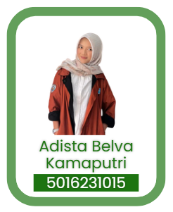
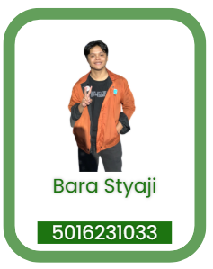
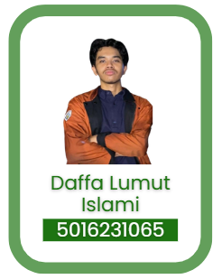
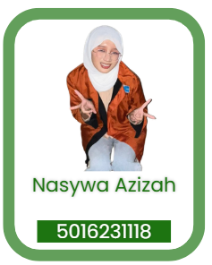
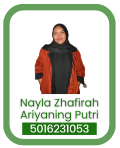

Platform ini difokuskan untuk membaca paparan kebisingan akibat aktivitas kereta api pada permukiman di Kelurahan Ketintang, Kota Surabaya. ECHOLEQ memadukan buffer rel, interpolasi titik kebisingan, dan skenario vegetasi untuk menunjukkan area aman maupun area yang masih rentan.
Fokus studiKelurahan Ketintang
Klasifikasi aman< 55 dBA (aman)
Klasifikasi waspada55-70 dBA (waspada)
Klasifikasi rentan> 70 dBA (rentan tinggi)
Kelompok 22
Showcase Tim ECHOLEQ
Galeri ini menampilkan anggota Kelompok 22 sekaligus pintu masuk ke tiga mode eksplorasi. Setiap mode dibuat berbeda: peta interaktif untuk pembacaan titik, perbandingan untuk grafik hubungan jarak dan kebisingan, serta mitigasi untuk simulasi vegetasi dan penurunan dBA.

AdistaAnggota Kelompok 22

BaraAnggota Kelompok 22

LumutAnggota Kelompok 22

NasywaAnggota Kelompok 22

NaylaAnggota Kelompok 22
Mode 01
Peta Interaktif
Fokus pada klik titik di area Ketintang, pembacaan nilai dBA hasil interpolasi, dan paparan langsung di sekitar buffer rel.
Mode 02
Perbandingan
Menampilkan grafik perbandingan kebisingan terhadap jarak dari rel, selisih antar zona, dan ringkasan tingkat risiko paparan.
Mode 03
Mitigasi
Menguji skenario vegetasi, melihat perubahan warna buffer, dan membaca rekomendasi penurunan kebisingan yang paling masuk akal.
ECHOLEQ Monitor
Peta dikunci agar tidak ikut bergerak saat panel kiri discroll. Klik kiri pada area mana pun di Ketintang untuk membaca nilai dBA. Buffer 10 m, 20 m, dan 40 m mengikuti jalur pada jrelka.geojson, sedangkan interpolasi berasal dari titik sampel fluktuatif pada kebisingan.geojson.